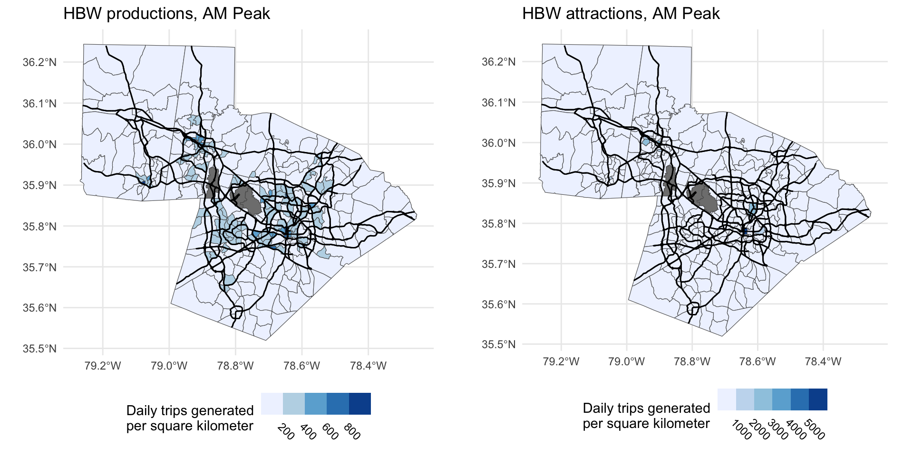

library(bf4sm)
library(tidyverse)
# Load NHTS and filter to North Carolina
nhts = load_nhts(NHTS_PATH)
nhts$households = filter(nhts$households, HHSTATE == "NC")
# Estimate the model using 2021 Census/LODES data for the Triangle
model = estimate(nhts, OSM_PATH, "NC", c("Durham", "Orange", "Wake"), 2021)
# Save the model for sharing with students
save_model(model, "rdu.model")Baby’s First Four-Step Model
Matt Bhagat-Conway
University of North Carolina at Chapel Hill
About me
- Assistant professor of City and Regional Planning at UNC Chapel Hill
- Research interests in public transportation, transport modeling, and computational methods
- Three years as a software developer prior to graduate school
- I teach our Planning Methods class at UNC
- I try to briefly cover a wide variety of methods used in planning, including demand modeling
Why introduce modeling to planners?
- Most planners will never use a model directly
- However, most planners will be consumers of model output
- Giving planners more experience with modeling will improve communication with modelers
- Provide a “healthy skepticism” of model results, but also
- Understand what the model can and can’t do
- Understand how the model can fit into planning processes
- Think of novel ways to use models
Typical experience of planners with models

© xkcd
Giving planners hands on experience with models
- There’s no substitute for hands-on experience working with a model
- Very few planners ever work with a model themselves
- Planners’ experience with models usually comes from theoretical discussions and on-the-job experiences
- I am not an engineer, but I’ve heard this is fairly common for engineers as well
How we usually teach modeling
- Take transportation planning
- Take statistics
- Take econometrics
- Take choice modeling
- Take GIS
- Work with component models (mode choice, destination choice, etc.)
- Actually run a model (optional)
An alternate approach
- Actually run a model
- Take transportation planning
- Take statistics
- Take econometrics (optional)
- Take choice modeling (optional)
- Take GIS (optional)
- Work with component models (mode choice, destination choice, etc.) (optional)
How do you run a model first?
- In my planning methods course, I do one lecture on modeling (https://go.unc.edu/planmodel)
- We primarily cover the four step model, with a nod to activity-based models
- Then, every student runs a very simple model and interprets the output
Baby’s First Four Step Model
- I implement this model using Baby’s First Four Step Model, an R package I developed for implementing very simple models
- Running the model only requires R and minimal computing power, so students can run it on their laptops
- Even Chromebooks!
- The four steps of the model map directly onto four functions in the package
- TAZs directly map onto Census tracts
- There are no extra steps: no university/airport model, no commercial vehicle model, no external travel zones
- The model can be estimated for any region in the US, using only publicly-available data
- All code is open-source: https://github.com/mattwigway/BabysFirstFourStepModel
Why a four-step model?
- Even as many regions have moved to activity-based models, four-step models are still ubiquitous
- Most of our students stay in North Carolina, and all regions in NC use four-step models
Estimating the model
- Estimating the model only requires the 2017 NHTS and an OpenStreetMap file for the network
- I estimate the model myself, and share with students, since model estimation is fairly rare even for regular model users
- Below is all the code required to estimate the model for the Research Triangle region
Running the model: installation
- Feel free to follow along if you have R!
- To run the model, students just need to install the Baby’s First Four Step Model package in R
Loading the model
- The next step is to load the already estimated model—either from a local file or a URL
Understanding the trip generation process
- The trip generation process uses linear regression, since my students are already familiar with that method
- All of the model equations are embedded in the model object, so I also have students interpret them
| Coefficient | Estimate | Std. Error | t value | Pr(>|t|) |
|---|---|---|---|---|
| (Intercept) | −0.01 | 0.02 | −0.41 | 0.68 |
| vehicles | 0.02 | 0.01 | 3.14 | 0.00 |
| hhsize | −0.03 | 0.01 | −4.06 | 0.00 |
| factor(income) 35000 | 0.02 | 0.01 | 1.16 | 0.25 |
| factor(income) 75000 | 0.06 | 0.02 | 3.07 | 0.00 |
| factor(income)100000 | 0.05 | 0.02 | 2.79 | 0.01 |
| HTRESDN | 0.00 | 0.00 | −0.10 | 0.92 |
| workers | 0.35 | 0.01 | 46.21 | 0.00 |
Running the model: trip generation
- The entire trip generation process happens with one function,
trip_generation,- It requires the model and a land use scenario (here we’re using the baseline)
- It returns the trip productions and attractions by location, trip type, and time of day
Trip generation results
Understanding the trip distribution process
- Trip distribution uses a gravity function, and I have students interpret the parameters before running it
| HBW | HBO | NHB |
|---|---|---|
| −1.21 | −1.87 | −1.71 |
Running the model: trip distribution
- Trip distribution is likewise a single function
- I have students map and interpret trip destinations from a tract of their choice
Understanding mode choice
- Mode choice uses a multinomial logit model, which I explain very briefly, but do have students interpret
- The model is very simple as we have few attributes of the trips
| (Intercept) | HTRESDN | dist_km | Midday | PM Peak | Overnight | HBW |
|---|---|---|---|---|---|---|
| 4.6374*** | -0.0004*** | 0.0633*** | 0.1495*** | 0.1379*** | 0.2439*** | 0.1609*** |
| 1.8684*** | -0.0002** | 0.0423*** | -0.3816*** | -1.6429*** | -1.8556*** | -1.0556*** |
| 4.0911*** | -0.0003*** | -0.4548*** | -0.2533*** | -0.0824** | 0.2451*** | -0.6660*** |
Running the mode choice model
| Car | Bike | Walk | Transit |
|---|---|---|---|
| 0.92 | 0.01 | 0.05 | 0.02 |
Assignment
- Traffic assignment uses a Frank-Wolfe algorithm in R and OpenStreetMap data
Land use scenarios
- Models are most useful for scenario planning
- Baby’s First Four Step Model has a very simple Excel-based format to specify land use scenarios
- Two sheets, one for residential characteristics by tract, one for jobs by tract
- I create “business as usual” and “compact development” scenarios to share with my students
| Residential | Employment | ||||||
|---|---|---|---|---|---|---|---|
| geoid | marginal | value | geoid | C000 | CNS07 | CNS15 | CNS18 |
| 37063000101 | hhsize | 1 | 37063000101 | 959 | 230 | 1 | 199 |
| 37063000101 | hhsize | 2 | 37063000102 | 2108 | 133 | 0 | 26 |
| 37063000101 | hhsize | 3 | 37063000200 | 1497 | 128 | 101 | 32 |
| 37063000101 | hhsize | 4 | 37063000301 | 659 | 103 | 21 | 150 |
| 37063000101 | income | 0 | 37063000302 | 265 | 1 | 1 | 19 |
| 37063000101 | income | 35000 | 37063000401 | 1836 | 413 | 0 | 316 |
Future work
- Transportation network scenarios
- Tools for specifying your own scenarios
Conclusion
All models are wrong, but some are useful.
—George Box
This one is very wrong, but that makes it more useful.
—Also George Box, from beyond the grave
Questions / Contact
Matt Bhagat-Conway
Project website: https://projects.indicatrix.org/BabysFirstFourStepModel Email: mwbc@unc.edu